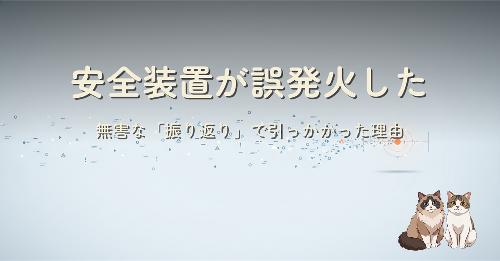

Claude Fable 5 で自分の検証環境をテストした後、セッションを要約する自作スキルを起動した瞬間に、モデルの安全装置が誤発火して Opus 4.8 へ自動フォールバックしました。個々の作業では一度も出なかったのに、一番無害なはずの「振り返り」で引っかかった。その順序が面白くて、なぜかを考えた記録です。
安全装置は「意図」ではなく「信号のパターン」を見ています。認証トークンの署名・秘密情報ファイルの読み出し・"認証バイパス" という語は、正規のテストでも攻撃でも同じ文字列として現れる。だから正当な作業でも、そうした信号が一定量集まると反応します。
作業中はその信号が会話のあちこちに散らばっていて密度が薄い。ところが「セッション全体を要約する」スキルは、散らばった信号を一つのターンに全部呼び戻してしまう。要約は情報を圧縮する道具で、情報を圧縮するということは信号も圧縮するということでした。無害な便利ツールが、たまたま危険信号の濃縮装置として働いた、という考察です。加えて公式の監視 4 領域に「要約された思考を引き出す試み（distillation）」が含まれることから、"要約" という動作自体が表層一致した合わせ技だった可能性にも触れています。同じ現象は公式ヘルプ・GitHub Issue・note / Qiita / Zenn で広く報告されており、記事末尾にクロスリンクをまとめました。